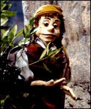

My siblings and I, when growing up, had a VHS tape of Pinocchio which we would watch on occasion. The interesting thing about it was that this was a very particular adaptation, not the one made famous by Disney but a decidedly creepier and more disturbing version. It left such a mark on us that it became a frequent topic of conversation when meeting for family events as adults. We described it with such disdain that our friends and significant others seemed sceptical as to how bad it could be. It appeared no amount of googling could find this mythical portrayal, until now.
The truth is that this Pinocchio adaptation was a BBC series originally airing in 1978. Produced by Barry Letts who famously produced many Doctor Who episodes and various other BBC productions. This version is a darker reading of original text. I found an obscure upload of the entire series of the show on DailyMotion and having rewatched (parts) of it I can definitely say my family's fears are fully founded.

You could not make a more unsettling version if you tried, the marionette of the title character is terrifying with jet black eyes, a shrill voice and body movements deep within the uncanny valley. The supporting characters are not much better with humans with elaborate face make up playing the fox and the cat, and a whole host of characters who are cruel and unforgiving. Interspersed musical numbers grate the ears and crude green screen techniques round out the package.
If you're curious enough I've linked to the offending videos here and part two here and you, dear reader, can confirm the absolute skin crawling nature of this imagining of Pinocchio.